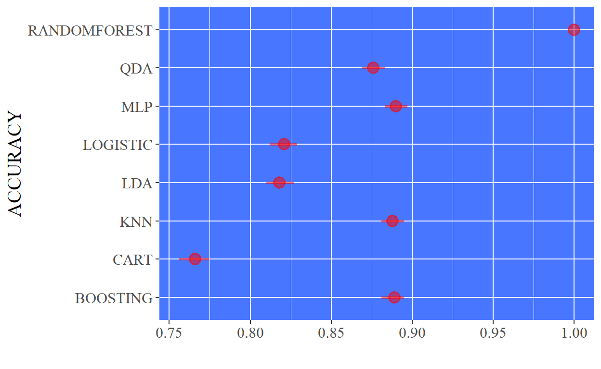
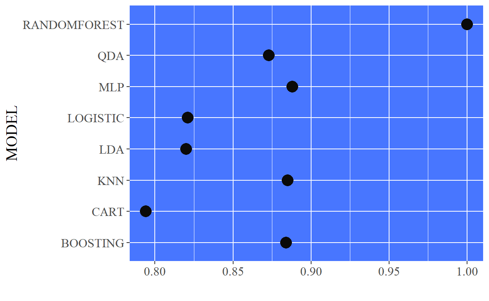
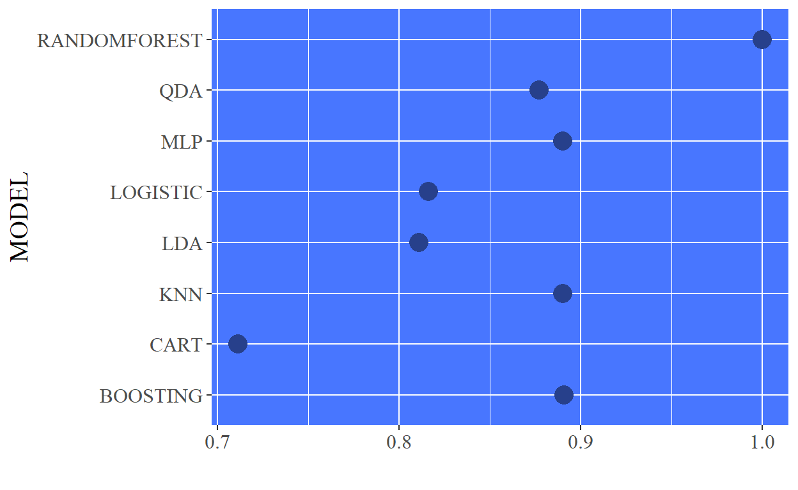
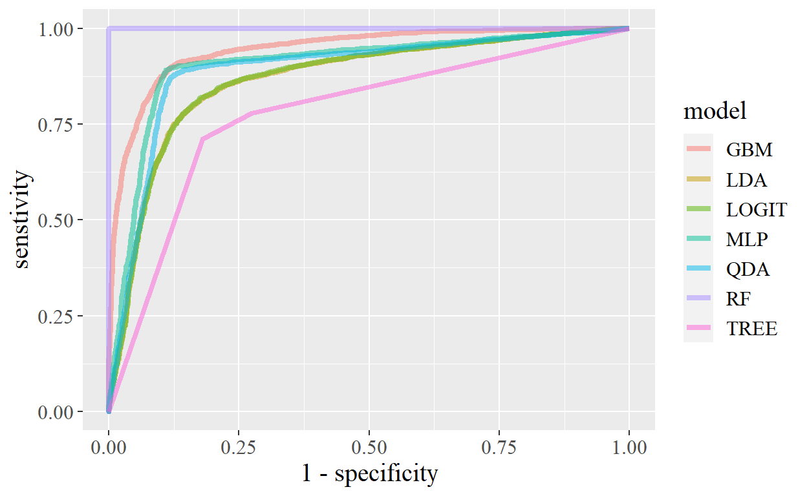

Classification And REgression Training
- data splitting
- pre-processing
- feature selection
- model tuning using re-sampling
- variable importance estimation
Firstly, Install the package using commands:
_install.packages("caret")_LIBRARIES TO USE
suppressMessages(library(dplyr))
suppressMessages(library(ggplot2))
suppressMessages(library(caret))
suppressMessages(library(e1071))
suppressMessages(library(gbm))
suppressMessages(library(mlbench))
suppressMessages(library(randomForest))
suppressMessages(library(neuralnet))
suppressMessages(library(pROC))
suppressMessages(library(gt))
CARET currently have 239 models included in latest version of caret {6.0.88}. Please make yourself ready for a thriller.
[1] "ada" "AdaBag"
[3] "AdaBoost.M1" "adaboost"
[5] "amdai" "ANFIS"
[7] "avNNet" "awnb"
[9] "awtan" "bag"
[11] "bagEarth" "bagEarthGCV"
[13] "bagFDA" "bagFDAGCV"
[15] "bam" "bartMachine"
[17] "bayesglm" "binda"
[19] "blackboost" "blasso"
[21] "blassoAveraged" "bridge"
[23] "brnn" "BstLm"
[25] "bstSm" "bstTree"
[27] "C5.0" "C5.0Cost"
[29] "C5.0Rules" "C5.0Tree"
[31] "cforest" "chaid"
[33] "CSimca" "ctree"
[35] "ctree2" "cubist"
[37] "dda" "deepboost"
[39] "DENFIS" "dnn"
[41] "dwdLinear" "dwdPoly"
[43] "dwdRadial" "earth"
[45] "elm" "enet"
[47] "evtree" "extraTrees"
[49] "fda" "FH.GBML"
[51] "FIR.DM" "foba"
[53] "FRBCS.CHI" "FRBCS.W"
[55] "FS.HGD" "gam"
[57] "gamboost" "gamLoess"
[59] "gamSpline" "gaussprLinear"
[61] "gaussprPoly" "gaussprRadial"
[63] "gbm_h2o" "gbm"
[65] "gcvEarth" "GFS.FR.MOGUL"
[67] "GFS.LT.RS" "GFS.THRIFT"
[69] "glm.nb" "glm"
[71] "glmboost" "glmnet_h2o"
[73] "glmnet" "glmStepAIC"
[75] "gpls" "hda"
[77] "hdda" "hdrda"
[79] "HYFIS" "icr"
[81] "J48" "JRip"
[83] "kernelpls" "kknn"
[85] "knn" "krlsPoly"
[87] "krlsRadial" "lars"
[89] "lars2" "lasso"
[91] "lda" "lda2"
[93] "leapBackward" "leapForward"
[95] "leapSeq" "Linda"
[97] "lm" "lmStepAIC"
[99] "LMT" "loclda"
[101] "logicBag" "LogitBoost"
[103] "logreg" "lssvmLinear"
[105] "lssvmPoly" "lssvmRadial"
[107] "lvq" "M5"
[109] "M5Rules" "manb"
[111] "mda" "Mlda"
[113] "mlp" "mlpKerasDecay"
[115] "mlpKerasDecayCost" "mlpKerasDropout"
[117] "mlpKerasDropoutCost" "mlpML"
[119] "mlpSGD" "mlpWeightDecay"
[121] "mlpWeightDecayML" "monmlp"
[123] "msaenet" "multinom"
[125] "mxnet" "mxnetAdam"
[127] "naive_bayes" "nb"
[129] "nbDiscrete" "nbSearch"
[131] "neuralnet" "nnet"
[133] "nnls" "nodeHarvest"
[135] "null" "OneR"
[137] "ordinalNet" "ordinalRF"
[139] "ORFlog" "ORFpls"
[141] "ORFridge" "ORFsvm"
[143] "ownn" "pam"
[145] "parRF" "PART"
[147] "partDSA" "pcaNNet"
[149] "pcr" "pda"
[151] "pda2" "penalized"
[153] "PenalizedLDA" "plr"
[155] "pls" "plsRglm"
[157] "polr" "ppr"
[159] "pre" "PRIM"
[161] "protoclass" "qda"
[163] "QdaCov" "qrf"
[165] "qrnn" "randomGLM"
[167] "ranger" "rbf"
[169] "rbfDDA" "Rborist"
[171] "rda" "regLogistic"
[173] "relaxo" "rf"
[175] "rFerns" "RFlda"
[177] "rfRules" "ridge"
[179] "rlda" "rlm"
[181] "rmda" "rocc"
[183] "rotationForest" "rotationForestCp"
[185] "rpart" "rpart1SE"
[187] "rpart2" "rpartCost"
[189] "rpartScore" "rqlasso"
[191] "rqnc" "RRF"
[193] "RRFglobal" "rrlda"
[195] "RSimca" "rvmLinear"
[197] "rvmPoly" "rvmRadial"
[199] "SBC" "sda"
[201] "sdwd" "simpls"
[203] "SLAVE" "slda"
[205] "smda" "snn"
[207] "sparseLDA" "spikeslab"
[209] "spls" "stepLDA"
[211] "stepQDA" "superpc"
[213] "svmBoundrangeString" "svmExpoString"
[215] "svmLinear" "svmLinear2"
[217] "svmLinear3" "svmLinearWeights"
[219] "svmLinearWeights2" "svmPoly"
[221] "svmRadial" "svmRadialCost"
[223] "svmRadialSigma" "svmRadialWeights"
[225] "svmSpectrumString" "tan"
[227] "tanSearch" "treebag"
[229] "vbmpRadial" "vglmAdjCat"
[231] "vglmContRatio" "vglmCumulative"
[233] "widekernelpls" "WM"
[235] "wsrf" "xgbDART"
[237] "xgbLinear" "xgbTree"
[239] "xyf" An auto-insurance company is revamping its pricing model. The analyst developing the new price model believes that the best approach is to develop 2 models: one for customers who are likely to file an insurance claim within the first year of their contract and another one for all other customers. The analyst has prepared a clean dataset consisting of 10,000 customers and 10 engineered features which capture driving behavior. The data has already been pre-processed for you (i.e., no missing data, no outliers, data is scaled, no correlated features, and the classes are fairly balanced). The data is contained in claim_prediction.csv , where CLAIM = 1 means the customer filed a claim in the first year and CLAIM = 0 means the customer did not. Develop a model to predict if customers will file a claim in their first year based on their driving behavior. In addition to submitting your code, use comments to explain the decisions you made and how well you expect this model to perform on new data from a similar customer pool (and why).
Note that you are being evaluated on your model building and validation workflow, rather than on the complexity of your solution.
IMPORTING DATA FROM MACHINE
BASIC SUMMARY REPORT
summary(db_file)
eaddc eafxa fddbc
Min. :-8.6810 Min. :-9.2100 Min. :-7.809085
1st Qu.:-2.3760 1st Qu.:-2.2884 1st Qu.:-1.605232
Median :-0.9240 Median :-0.7959 Median :-0.054862
Mean :-0.7781 Mean :-0.7449 Mean : 0.005933
3rd Qu.: 0.7501 3rd Qu.: 0.7956 3rd Qu.: 1.572018
Max. : 8.2273 Max. : 7.0404 Max. : 9.119290
afdda axcxa excce
Min. :-6.6279 Min. :-9.93688 Min. :-8.8114
1st Qu.:-0.6471 1st Qu.:-1.67694 1st Qu.:-0.8607
Median : 0.8958 Median :-0.03197 Median : 0.8303
Mean : 0.7641 Mean :-0.03730 Mean : 0.7473
3rd Qu.: 2.2121 3rd Qu.: 1.59999 3rd Qu.: 2.4207
Max. : 9.2032 Max. : 7.25691 Max. : 9.4842
fbxfc dffec cexae
Min. :-7.57842 Min. :-7.9576 Min. :-8.82289
1st Qu.:-1.64236 1st Qu.:-2.2499 1st Qu.:-1.64179
Median : 0.06361 Median :-0.9137 Median : 0.14379
Mean : 0.02767 Mean :-0.7546 Mean :-0.01217
3rd Qu.: 1.68036 3rd Qu.: 0.6417 3rd Qu.: 1.67551
Max. : 8.22503 Max. : 8.4134 Max. : 8.26862
bbadx claim
Min. :-8.3827 0:5052
1st Qu.:-0.7139 1:4948
Median : 0.8871
Mean : 0.7248
3rd Qu.: 2.2628
Max. : 8.0424 SPLITTING DATA
Data partition using caret package createPartition function. It simply uses index numbers to partition a data frame / data tibble.
set.seed(114)
index <- createDataPartition(db_file$claim, p = 0.8, list = FALSE)
train <- db_file[index, ]
test <- db_file[-index, ]
CROSS VALIDATION METHOD
set.seed(432)
tc <- trainControl(method = 'cv', number = 10)
LDA {Linear Discriminant Analysis}
lda <- train(
claim ~ .,
data = train,
method = 'lda',
metric = 'Accuracy',
trcontrol = tc
)
lda
Linear Discriminant Analysis
8001 samples
10 predictor
2 classes: '0', '1'
No pre-processing
Resampling: Bootstrapped (25 reps)
Summary of sample sizes: 8001, 8001, 8001, 8001, 8001, 8001, ...
Resampling results:
Accuracy Kappa
0.8189057 0.6376787ldapred <- predict(lda, train)
lda_params <- confusionMatrix(train$claim, ldapred, positive = '1')
lda_accuracy <- lda_params$overall[1]
lda_kappa <- lda_params$overall[2]
lda_accuracy_lower <- lda_params$overall[3]
lda_accuracy_upper <- lda_params$overall[4]
ldaprob <- predict(lda, train, type = 'prob')
lda_sentivity <- lda_params$byClass[1]
lda_specificity <- lda_params$byClass[2]
lda_precision <- lda_params$byClass[5]
lda_recall <- lda_params$byClass[6]
lda_f1 <- lda_params$byClass[7]
lda_prevalence <- lda_params$byClass[8]
QDA {Quadratic Discriminant Analysis}
Quadratic Discriminant Analysis
8001 samples
10 predictor
2 classes: '0', '1'
No pre-processing
Resampling: Bootstrapped (25 reps)
Summary of sample sizes: 8001, 8001, 8001, 8001, 8001, 8001, ...
Resampling results:
Accuracy Kappa
0.8762166 0.7524044qdapred <- predict(qda, train)
qda_params <- confusionMatrix(train$claim, qdapred, positive = '1')
qda_accuracy <- qda_params$overall[1]
qda_kappa <- qda_params$overall[2]
qda_accuracy_lower <- qda_params$overall[3]
qda_accuracy_upper <- qda_params$overall[4]
qdaprob <- predict(qda, train, type = 'prob')
qda_sentivity <- qda_params$byClass[1]
qda_specificity <- qda_params$byClass[2]
qda_precision <- qda_params$byClass[5]
qda_recall <- qda_params$byClass[6]
qda_f1 <- qda_params$byClass[7]
qda_prevalence <- qda_params$byClass[8]
GLM {Logistic Regression}
logit <- train(
claim ~ .,
data = train,
method = 'glm', family = 'binomial',
trControl = tc
)
print(logit)
Generalized Linear Model
8001 samples
10 predictor
2 classes: '0', '1'
No pre-processing
Resampling: Cross-Validated (10 fold)
Summary of sample sizes: 7201, 7200, 7201, 7202, 7201, 7201, ...
Resampling results:
Accuracy Kappa
0.8195232 0.6389814logitpred <- predict(logit, train)
logit_params <- confusionMatrix(train$claim, logitpred, positive = '1')
logit_accuracy <- logit_params$overall[1]
logit_kappa <- logit_params$overall[2]
logit_accuracy_lower <- logit_params$overall[3]
logit_accuracy_upper <- logit_params$overall[4]
logitprob <- predict(logit, train, type = 'prob')
logit_sentivity <- logit_params$byClass[1]
logit_specificity <- logit_params$byClass[2]
logit_precision <- logit_params$byClass[5]
logit_recall <- logit_params$byClass[6]
logit_f1 <- logit_params$byClass[7]
logit_prevalence <- logit_params$byClass[8]
CART {Classification & Regression Tree}
tree <- train(
claim ~ .,
data = train,
method = 'rpart',
trControl = tc
)
tree
CART
8001 samples
10 predictor
2 classes: '0', '1'
No pre-processing
Resampling: Cross-Validated (10 fold)
Summary of sample sizes: 7201, 7201, 7200, 7200, 7201, 7201, ...
Resampling results across tuning parameters:
cp Accuracy Kappa
0.02323819 0.7702739 0.5403422
0.02930033 0.7542793 0.5083809
0.49760040 0.6210609 0.2371210
Accuracy was used to select the optimal model using the
largest value.
The final value used for the model was cp = 0.02323819.treepred <- predict(tree, train)
tree_params <- confusionMatrix(train$claim, treepred, positive = '1')
tree_accuracy <- tree_params$overall[1]
tree_kappa <- tree_params$overall[2]
tree_accuracy_lower <- tree_params$overall[3]
tree_accuracy_upper <- tree_params$overall[4]
treeprob <- predict(tree, train, type = 'prob')
tree_sentivity <- tree_params$byClass[1]
tree_specificity <- tree_params$byClass[2]
tree_precision <- tree_params$byClass[5]
tree_recall <- tree_params$byClass[6]
tree_f1 <- tree_params$byClass[7]
tree_prevalence <- tree_params$byClass[8]
RANDOM FOREST
randomForest implements Breiman’s random forest algorithm (based on Breiman and Cutler’s original Fortran code) for classification and regression.
Here are the definitions of the variable importance measures.
The first measure is computed from permuting OOB data: For each tree, the prediction error on the out-of-bag portion of the data is recorded (error rate for classification, MSE for regression). Then the same is done after permuting each predictor variable. The difference between the two are then averaged over all trees, and normalized by the standard deviation of the differences. If the standard deviation of the differences is equal to 0 for a variable, the division is not done (but the average is almost always equal to 0 in that case).
The second measure is the total decrease in node impurities from splitting on the variable, averaged over all trees. For classification, the node impurity is measured by the Gini index. For regression, it is measured by residual sum of squares.
set.seed(126)
# grid <- expand.grid(
# interaction.depth = c(1, 3, 5, 7),
# ntrees = c(100, 150, 500)
# )
system.time(
rf <- train(
claim ~ .,
data = train,
method = 'rf',
trControl = tc,
tuneLength = 5
#tuneGrid = grid
)
)
user system elapsed
307.86 11.80 349.33 rf
Random Forest
8001 samples
10 predictor
2 classes: '0', '1'
No pre-processing
Resampling: Cross-Validated (10 fold)
Summary of sample sizes: 7201, 7200, 7201, 7201, 7201, 7201, ...
Resampling results across tuning parameters:
mtry Accuracy Kappa
2 0.8782676 0.7565151
4 0.8776418 0.7552764
6 0.8765171 0.7530258
8 0.8737676 0.7475261
10 0.8722670 0.7445177
Accuracy was used to select the optimal model using the
largest value.
The final value used for the model was mtry = 2.rfpred <- predict(rf, train)
rf_params <- confusionMatrix(train$claim, rfpred, positive = '1')
rf_accuracy <- rf_params$overall[1]
rf_kappa <- rf_params$overall[2]
rf_accuracy_lower <- rf_params$overall[3]
rf_accuracy_upper <- rf_params$overall[4]
rfprob <- predict(rf, train, type = 'prob')
rf_sentivity <- rf_params$byClass[1]
rf_specificity <- rf_params$byClass[2]
rf_precision <- rf_params$byClass[5]
rf_recall <- rf_params$byClass[6]
rf_f1 <- rf_params$byClass[7]
rf_prevalence <- rf_params$byClass[8]
GBM {Gradient Boosting Model}
set.seed(125)
system.time(
boost <- train(
claim ~.,
data = train,
method = 'gbm',
verbose = FALSE,
tuneGrid = expand.grid(
n.trees = c(50, 100, 200),
interaction.depth = c(5, 9, 13),
shrinkage = 0.1,
n.minobsinnode = 50
)
)
)
user system elapsed
195.77 0.72 223.16 boost
Stochastic Gradient Boosting
8001 samples
10 predictor
2 classes: '0', '1'
No pre-processing
Resampling: Bootstrapped (25 reps)
Summary of sample sizes: 8001, 8001, 8001, 8001, 8001, 8001, ...
Resampling results across tuning parameters:
interaction.depth n.trees Accuracy Kappa
5 50 0.8530858 0.7061292
5 100 0.8645368 0.7290376
5 200 0.8690075 0.7379822
9 50 0.8639361 0.7278222
9 100 0.8693879 0.7387322
9 200 0.8699872 0.7399403
13 50 0.8670066 0.7339638
13 100 0.8704400 0.7408458
13 200 0.8693575 0.7386824
Tuning parameter 'shrinkage' was held constant at a value of
0.1
Tuning parameter 'n.minobsinnode' was held constant at a
value of 50
Accuracy was used to select the optimal model using the
largest value.
The final values used for the model were n.trees =
100, interaction.depth = 13, shrinkage = 0.1 and n.minobsinnode = 50.boostpred <- predict(boost, train)
boost_params <- confusionMatrix(train$claim, boostpred, positive = '1')
boost_accuracy <- boost_params$overall[1]
boost_kappa <- boost_params$overall[2]
boost_accuracy_lower <- boost_params$overall[3]
boost_accuracy_upper <- boost_params$overall[4]
boostprob <- predict(boost, train, type = 'prob')
boost_sentivity <- boost_params$byClass[1]
boost_specificity <- boost_params$byClass[2]
boost_precision <- boost_params$byClass[5]
boost_recall <- boost_params$byClass[6]
boost_f1 <- boost_params$byClass[7]
boost_prevalence <- boost_params$byClass[8]
MLP {Multi-Perceptron}
set.seed(456)
system.time(
nnet <- train(
claim ~ .,
data = train,
method = 'mlp',
verbose = F,
tuneGrid = expand.grid(size = c(5, 7,9,10)),
trControl = tc
)
)
user system elapsed
72.65 0.16 82.31 nnet
Multi-Layer Perceptron
8001 samples
10 predictor
2 classes: '0', '1'
No pre-processing
Resampling: Cross-Validated (10 fold)
Summary of sample sizes: 7201, 7201, 7200, 7201, 7200, 7201, ...
Resampling results across tuning parameters:
size Accuracy Kappa
5 0.8730157 0.7460240
7 0.8766387 0.7532842
9 0.8816401 0.7632832
10 0.8821382 0.7642772
Accuracy was used to select the optimal model using the
largest value.
The final value used for the model was size = 10.nnetpred <- predict(nnet, train)
nnet_params <- confusionMatrix(train$claim, nnetpred, positive = '1')
nnet_accuracy <- nnet_params$overall[1]
nnet_kappa <- nnet_params$overall[2]
nnet_accuracy_lower <- nnet_params$overall[3]
nnet_accuracy_upper <- nnet_params$overall[4]
nnetprob <- predict(nnet, train, type = 'prob')
nnet_sentivity <- nnet_params$byClass[1]
nnet_specificity <- nnet_params$byClass[2]
nnet_precision <- nnet_params$byClass[5]
nnet_recall <- nnet_params$byClass[6]
nnet_f1 <- nnet_params$byClass[7]
nnet_prevalence <- nnet_params$byClass[8]
KNN {k-Nearest Neighbours}
set.seed(457)
system.time(
knn <- train(
claim ~ .,
data = train,
method = 'knn',
trControl = tc,
tuneGrid = expand.grid(
k = c(5, 9, 11, 13, 15, 17)
)
)
)
user system elapsed
5.31 0.01 6.09 knn
k-Nearest Neighbors
8001 samples
10 predictor
2 classes: '0', '1'
No pre-processing
Resampling: Cross-Validated (10 fold)
Summary of sample sizes: 7201, 7201, 7200, 7201, 7200, 7202, ...
Resampling results across tuning parameters:
k Accuracy Kappa
5 0.8801429 0.7602601
9 0.8860168 0.7720218
11 0.8862665 0.7725258
13 0.8866412 0.7732795
15 0.8862664 0.7725269
17 0.8863914 0.7727752
Accuracy was used to select the optimal model using the
largest value.
The final value used for the model was k = 13.knnpred <- predict(knn, train)
knn_params <- confusionMatrix(train$claim, knnpred, positive = '1')
knn_accuracy <- knn_params$overall[1]
knn_kappa <- knn_params$overall[2]
knn_accuracy_lower <- knn_params$overall[3]
knn_accuracy_upper <- knn_params$overall[4]
knnprob <- predict(knn, train, type = 'prob')
knn_sentivity <- knn_params$byClass[1]
knn_specificity <- knn_params$byClass[2]
knn_precision <- knn_params$byClass[5]
knn_recall <- knn_params$byClass[6]
knn_f1 <- knn_params$byClass[7]
knn_prevalence <- knn_params$byClass[8]
TABLE
df <- data.frame(
model = c('lda', 'qda', 'logistic', 'cart', 'randomforest',
'boosting', 'mlp', 'knn'),
accuracy = c(lda_accuracy, qda_accuracy, logit_accuracy, tree_accuracy,
rf_accuracy, boost_accuracy, nnet_accuracy, knn_accuracy),
acc_lower = c(lda_accuracy_lower, qda_accuracy_lower,
logit_accuracy_lower,tree_accuracy_lower,rf_accuracy_lower,
boost_accuracy_lower,
nnet_accuracy_lower, knn_accuracy_lower),
acc_upper = c(lda_accuracy_upper,qda_accuracy_upper,logit_accuracy_upper,
tree_accuracy_upper,rf_accuracy_upper,boost_accuracy_upper,
nnet_accuracy_upper, knn_accuracy_upper),
kappa = c(lda_kappa, qda_kappa, logit_kappa, tree_kappa, rf_kappa,
boost_kappa, nnet_kappa, knn_kappa),
senstivity = c(lda_sentivity, qda_sentivity, logit_sentivity,
tree_sentivity, rf_sentivity, boost_sentivity,
nnet_sentivity, knn_sentivity),
specificity = c(lda_specificity, qda_specificity, logit_specificity,
tree_specificity, rf_specificity, boost_specificity,
nnet_specificity, knn_specificity),
precision = c(lda_precision, qda_precision, logit_precision,
tree_precision, rf_precision, boost_precision,
nnet_precision, knn_precision),
recall = c(lda_recall, qda_recall, logit_recall, tree_recall, rf_recall,
boost_recall, nnet_recall, knn_recall),
f1 = c(lda_f1, qda_f1, logit_f1, tree_f1, rf_f1, boost_f1, nnet_f1,
knn_f1),
prevalence = c(lda_prevalence, qda_prevalence, logit_prevalence,
tree_prevalence, rf_prevalence, boost_prevalence,
nnet_prevalence, knn_prevalence)
)
df[, -1] <- round(df[, -1], 3)
df$model <- toupper(df$model)
names(df) <- toupper(names(df))
d <- data.frame(
x <- c(0,1),
y <- c(0,1)
)
ggplot(d, aes(x, y))+
geom_rect(aes(xmin = 0, xmax = 0.1, ymin = 0, ymax = 0.5), color = 'sienna2', fill = 'tan4')+
geom_rect(aes(xmin = 0.1, xmax = 0.6, ymin = 0, ymax = 0.5), color = 'sienna2', fill = 'tan4')+
geom_rect(aes(xmin = 0.1, xmax = 0.6, ymin = 0.5, ymax = 0.9), color = 'sienna2', fill = 'tan4')+
geom_rect(aes(xmin = 0, xmax = 0.1, ymin = 0.5, ymax = 0.9), color = 'sienna2', fill = 'tan4')+
geom_rect(aes(xmin = 0.1, xmax = 0.6, ymin = 0.9, ymax = 1), color = 'sienna2', fill = 'tan4')+
geom_rect(aes(xmin = 0.6, xmax = 1, ymin = 0.9, ymax = 1), color = 'sienna2', fill = 'tan4')+
geom_rect(aes(xmin = 0.6, xmax = 1, ymin = 0, ymax = 0.5), color = 'sienna2', fill = 'tan4')+
geom_rect(aes(xmin = 0.6, xmax = 1, ymin = 0.5, ymax = 0.9), color = 'sienna2', fill = 'tan4')+
labs(x = "TRUE VALUES", y = "PREDICTED VALUE")+
geom_text(aes(x = 0.05, y = 0.25), label = "TRUE", size = 3, color = 'seashell')+
geom_text(aes(x = 0.05, y = 0.75), label = "FALSE", size = 3, color = 'seashell')+
geom_text(aes(x = 0.35, y = 0.25), label = "FALSE POSITIVE", size = 6, color = 'seashell')+
geom_text(aes(x = 0.35, y = 0.7), label = "TRUE NEGATIVE", size = 6, color = 'seashell')+
geom_text(aes(x = 0.35, y = 0.95), label = "FALSE", size = 3, color = 'seashell')+
geom_text(aes(x = 0.80, y = 0.95), label = "TRUE", size = 3, color = 'seashell')+
geom_text(aes(x = 0.80, y = 0.25), label = "TRUE POSITIVE", size = 6, color = 'seashell')+
geom_text(aes(x = 0.80, y = 0.7), label = "FALSE NEGATIVE", size = 6, color = 'seashell')+
theme(text = element_text(colour = "royalblue1", size = 15, family = "serif"),
axis.ticks = element_blank(),
axis.text = element_blank(),
panel.grid = element_blank(),
panel.background = element_blank())

| MODEL | ACCURACY | KAPPA | ACC_LOWER | ACC_UPPER |
|---|---|---|---|---|
| LDA | 0.818 | 0.636 | 0.810 | 0.827 |
| QDA | 0.876 | 0.752 | 0.869 | 0.883 |
| LOGISTIC | 0.821 | 0.641 | 0.812 | 0.829 |
| CART | 0.766 | 0.531 | 0.756 | 0.775 |
| RANDOMFOREST | 1.000 | 1.000 | 1.000 | 1.000 |
| BOOSTING | 0.889 | 0.777 | 0.881 | 0.895 |
| MLP | 0.890 | 0.780 | 0.883 | 0.897 |
| KNN | 0.888 | 0.777 | 0.881 | 0.895 |
| MODEL | SENSTIVITY | SPECIFICITY | RECALL | F1 | PREVALENCE |
|---|---|---|---|---|---|
| LDA | 0.820 | 0.817 | 0.820 | 0.815 | 0.489 |
| QDA | 0.873 | 0.879 | 0.873 | 0.875 | 0.497 |
| LOGISTIC | 0.821 | 0.821 | 0.821 | 0.818 | 0.492 |
| CART | 0.794 | 0.743 | 0.794 | 0.750 | 0.443 |
| RANDOMFOREST | 1.000 | 1.000 | 1.000 | 1.000 | 0.495 |
| BOOSTING | 0.884 | 0.893 | 0.884 | 0.888 | 0.499 |
| MLP | 0.888 | 0.892 | 0.888 | 0.889 | 0.495 |
| KNN | 0.885 | 0.892 | 0.885 | 0.887 | 0.498 |
GRAPH
ggplot(df, aes(MODEL, ACCURACY)) +
geom_pointrange(aes(ymin = ACC_LOWER, ymax = ACC_UPPER),
col = 'red', alpha = 0.5, size = 0.9) +
coord_flip()+
labs(y = "", x = "ACCURACY")+
theme(text = element_text(family = 'serif', size = 15),
panel.background = element_rect(fill = 'royalblue1'))

ggplot(df, aes(MODEL, SENSITIVITY)) +
geom_point(aes(MODEL, RECALL), size = 5, color = 'grey4' )+
coord_flip()+
labs(y = "")+
theme(text = element_text(family = 'serif', size = 15),
panel.background = element_rect(fill = 'royalblue1'))

ggplot(df, aes(MODEL, PRECISION)) +
geom_point(size = 5, color = 'royalblue4' )+
coord_flip()+
labs(y = "")+
theme(text = element_text(family = 'serif', size = 15),
panel.background = element_rect(fill = 'royalblue1'))

ldaroc <- roc(predictor = ldaprob$`1`, response = train$claim)
qdaroc <- roc(predictor = qdaprob$`1`, response = train$claim)
logitroc <- roc(predictor = logitprob$`1`, response = train$claim)
treeroc <- roc(predictor = treeprob$`1`, response = train$claim)
rfroc <- roc(predictor = rfprob$`1`, response = train$claim)
boostroc <- roc(predictor = boostprob$`1`, response = train$claim)
nnetroc <- roc(predictor = nnetprob$`1`, response = train$claim)
knnroc <- roc(predictor = knnprob$`1`, response = train$claim)
roc_curve <- data.frame(
senstivity = c(ldaroc$sensitivities, qdaroc$sensitivities, logitroc$sensitivities,
treeroc$sensitivities, rfroc$sensitivities, boostroc$sensitivities,
nnetroc$sensitivities),
specificity = c(ldaroc$specificities, qdaroc$specificities, logitroc$specificities,
treeroc$specificities, rfroc$specificities, boostroc$specificities,
nnetroc$specificities),
model = c(rep("LDA", length(ldaroc$specificities)),
rep("QDA", length(qdaroc$specificities)),
rep("LOGIT", length(logitroc$specificities)),
rep("TREE", length(treeroc$specificities)),
rep("RF", length(rfroc$specificities)),
rep("GBM", length(boostroc$specificities)),
rep("MLP", length(nnetroc$specificities)))
)
ggplot(roc_curve, aes(x = 1-specificity, y = senstivity, group = model, color = model))+
geom_line(lwd = 1.5, alpha = 0.5)+
theme(text = element_text(family = 'serif', size = 15))

final <- predict(rf, test)
confusionMatrix(data = test$claim, final, positive = "1")
Confusion Matrix and Statistics
Reference
Prediction 0 1
0 885 125
1 115 874
Accuracy : 0.8799
95% CI : (0.8649, 0.8939)
No Information Rate : 0.5003
P-Value [Acc > NIR] : <2e-16
Kappa : 0.7599
Mcnemar's Test P-Value : 0.5613
Sensitivity : 0.8749
Specificity : 0.8850
Pos Pred Value : 0.8837
Neg Pred Value : 0.8762
Prevalence : 0.4997
Detection Rate : 0.4372
Detection Prevalence : 0.4947
Balanced Accuracy : 0.8799
'Positive' Class : 1